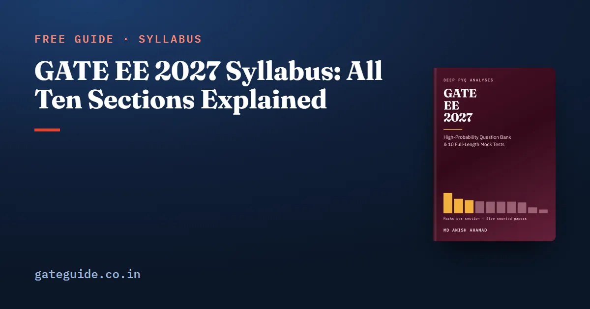

GATE EE 2027 Syllabus: All Ten Sections Explained

The GATE EE 2027 syllabus has ten technical sections worth 85 marks, plus General Aptitude worth 15. The document is only two pages long, but each phrase in it is a promise about what you may be asked to do. This guide walks through the ten sections in order and turns each one into plain instructions, beside the marks each section actually drew in the five papers from 2022 to 2026.
In this guide
- Key takeaways
- What a syllabus phrase actually promises
- The ten sections at a glance
- Sections 1 to 3: the mathematical and physical base
- Sections 4 and 5: signals and machines
- Sections 6 and 7: the power network and its control
- Sections 8 to 10: instruments, electronics and converters
- How to use the syllabus as a checklist
- Where the 15 General Aptitude marks fit
- Quick revision
Key takeaways
- The 2027 EE syllabus has ten sections; General Aptitude is a separate, common syllabus worth 15 marks.
- Engineering Mathematics was the largest technical section in all five counted papers, with a mean of 14.8 marks.
- Six middle sections sit between 8.2 and 9.6 marks on the mean, so their order is close to a tie.
- Several phrases appear in two sections, such as Fourier series and rectifiers, and the syllabus does not say where a question on them belongs.
- Thirteen topic groups the syllabus names have never been the subject of a counted question, yet they remain examinable.
- Confirm the text on gate2027.iitm.ac.in; nothing here replaces the official document.
What a syllabus phrase actually promises
A syllabus phrase is one item between commas or semicolons in the official document, such as "Economic Load Dispatch" or "Bode plots". The 2027 EE document contains 217 of them. Each one is a named skill, and the paper may test any of them.
A section is one of the ten numbered headings. A topic group is a cluster of related phrases inside a section, such as "symmetrical components and fault analysis". Counts in this guide come from the GATE EE 2027 book, which placed every question of the 2022 to 2026 papers into one section and one topic group.
The marks below are counted from past papers. The organisers publish no official weightage, so read every figure as history, not a forecast.
The ten sections at a glance
| Section | Mean marks, 2022-2026 | Range |
|---|---|---|
| 1. Engineering Mathematics | 14.8 | 13-18 |
| 2. Electric circuits | 8.6 | 7-11 |
| 3. Electromagnetic Fields | 4.4 | 3-6 |
| 4. Signals and Systems | 8.8 | 4-11 |
| 5. Electrical Machines | 8.4 | 6-10 |
| 6. Power Systems | 10.6 | 9-12 |
| 7. Control Systems | 8.2 | 6-9 |
| 8. Electrical and Electronic Measurements | 2.6 | 1-5 |
| 9. Analog and Digital Electronics | 8.6 | 7-10 |
| 10. Power Electronics | 9.6 | 6-11 |
| General Aptitude | 15.0 | 15-15 |
Remember: Read the range before the mean. Your paper draws one value from each range, and five papers have probably not shown the full width of any of them.
Sections 1 to 3: the mathematical and physical base
Engineering Mathematics names five paragraphs: linear algebra, calculus, differential equations, complex variables, and probability and statistics. In plain words, you must find eigenvalues and decide whether a system of equations has a solution. You must evaluate integrals, including line and surface integrals, and apply Green's, Stokes's and the divergence theorem. You must also solve ordinary differential equations, use residues, and work with random variables and distributions.
Electric circuits (the document prints a lower-case c) asks you to analyse any network with ideal and dependent sources. That means KCL and KVL, node and mesh analysis, and the Thevenin, Norton, superposition and maximum power transfer theorems. It adds transients, sinusoidal steady state, resonance, two-port networks and balanced three-phase circuits.
Electromagnetic Fields covers Coulomb, Gauss, Biot-Savart, Ampere and Faraday, plus the Lorentz force. It also names capacitance and inductance of simple shapes, and magnetic circuits with reluctance. That last group has never been the subject of a counted question.
Sections 4 and 5: signals and machines
Signals and Systems asks you to describe signals, test a system for linearity, time invariance and causality, and use the Fourier series, Fourier transform, Laplace transform and Z transform. Its final sentence asks for the RMS and average value of any periodic waveform.
That last phrase is easy to skim past, so here is what it asks you to do. The RMS value of a signal made of components at different frequencies is the square root of the sum of their squared RMS values. Take volts. The DC part has RMS value 10 V, and the sinusoid has RMS value V:
The trap is adding 10 and 14.14 directly to get 24.14 V. RMS values of different frequencies add as squares, never as plain numbers.
Electrical Machines names the single-phase and three-phase transformer, the auto-transformer, DC machines, three-phase and single-phase induction motors, synchronous machines, and losses and efficiency. Three-phase induction machines were examined in all five papers and carried 17 of the section's 42 counted marks.
Sections 6 and 7: the power network and its control
Power Systems is the longest section. It runs from generation and transmission concepts through line models, economic load dispatch, compensation, insulators, distribution, per-unit quantities and load flow. It then covers voltage and frequency control, power factor correction, symmetrical components, faults, protection, circuit breakers and stability with the equal area criterion. Economic load dispatch and fault analysis appeared in all five papers.
Control Systems asks you to model a system as a transfer function or block diagram. You then judge its time response and its stability by Routh-Hurwitz and Nyquist, draw Bode plots and root loci, and design lead, lag and PID compensation. It finishes with state-space models and their solution.
Sections 8 to 10: instruments, electronics and converters
Electrical and Electronic Measurements is the smallest section, with a mean of 2.6 marks. It names bridges and potentiometers, measurement of power and energy, instrument transformers, digital meters, phase and frequency measurement, oscilloscopes and error analysis. Three of its seven topic groups have never been the subject of a counted question.
Analog and Digital Electronics covers diode circuits, amplifier biasing, oscillators, op-amps, active filters, timers, logic circuits, multiplexers, Schmitt triggers and converters. Op-amps appeared in all five papers. Note that the document writes "combinatorial logic circuits", which the book reads as the combinational logic of digital electronics.
Power Electronics names thyristor, MOSFET and IGBT characteristics, buck, boost and buck-boost converters, rectifiers, thyristor converters, line-current harmonics, power factor and inverters with sinusoidal PWM. Seventeen of its 31 counted questions were numerical-answer questions, more than in any other section.
Trap: A phrase that appears in two sections is not counted twice. Fourier series sits in Sections 1 and 4, and rectifiers in Sections 9 and 10. Learn the idea once and recognise it under either heading.
How to use the syllabus as a checklist
Print the two-page document and work through it one phrase at a time.
- Beside each phrase, write one sentence saying what you would be asked to calculate or decide.
- Mark each phrase as learned, half-learned or not started.
- Give the four-and-five-paper topics depth first, because they carried 233 of the 425 technical marks set in five papers.
- Then give the thirteen never-examined topic groups a short, honest reading. No past paper can prepare you for them.
- Keep General Aptitude running from the first week, because its 15 marks did not vary in any counted paper.
The book prints the full topic table for every section with the marks each topic drew in each year, which this guide only summarises. If you are sitting a second paper or need the fee rules, check the registration and exam dates first. The marking scheme, which is common to every GATE paper, explains how MCQ, MSQ and NAT questions are scored.
In one line: The syllabus tells you what can be asked; the counted papers tell you roughly how much each part has carried, and you need both.
Where the 15 General Aptitude marks fit
General Aptitude is not in the EE document, yet it is worth more than the mean of any technical section. In all five counted papers it was ten multiple-choice questions, five at one mark and five at two. Treat it as an eleventh section with its own weekly slot, and use the General Aptitude preparation guide to plan it.
The 2027 paper is organised by IIT Madras, and its one published EE decision so far is this syllabus. Read the guide to IIT Madras as organising institute for what that does and does not tell you.
Quick revision
- Ten technical sections carry 85 marks; General Aptitude carries 15 and has its own syllabus.
- Engineering Mathematics was the largest technical section in every counted paper, at 13 to 18 marks.
- The six middle sections are nearly tied on the mean, so do not rank them by small differences.
- Signals and Systems has the widest range, from 11 marks down to 4.
- RMS values of different frequencies combine as the square root of the sum of squares.
- Thirteen named topic groups have never been asked; read them anyway.
- Confirm the syllabus on gate2027.iitm.ac.in before you finalise your plan.
Frequently asked questions
How many sections are there in the GATE EE 2027 syllabus?
The official 2027 Electrical Engineering syllabus has ten technical sections, from Engineering Mathematics to Power Electronics. Together they carry 85 of the paper's 100 marks. General Aptitude carries the other 15 and is published as a separate common syllabus. Confirm the current document on the official GATE 2027 website before you plan around it.
Which section of the GATE EE syllabus carries the most marks?
Engineering Mathematics. In the five papers from 2022 to 2026 it carried 15, 13, 13, 15 and 18 marks, the largest technical section every year. Power Systems and Power Electronics come next on the five-paper mean. These are counts of past papers, not an official weightage, and your paper may differ.
Is General Aptitude part of the GATE EE syllabus?
General Aptitude is part of the paper but not part of the EE syllabus document. It is common to every GATE paper and has its own syllabus. In all five counted EE papers it was ten questions worth exactly 15 marks, more than any technical section has averaged.
Where can I download the official GATE EE 2027 syllabus PDF?
From the GATE 2027 website run by IIT Madras, under the syllabus documents for each paper. The EE document is two pages long. Read it yourself rather than relying on any summary, this one included, and check the current notification in case a corrected version is posted.
Are there topics in the GATE EE syllabus that have never been asked?
Yes. Grouping the syllabus into topic groups, thirteen produced no counted question in the five papers from 2022 to 2026, including oscilloscopes, per-unit quantities, insulators and Schmitt triggers. They are still named in the 2027 syllabus, so they are still examinable and deserve a short reading.
Sources
Dates, fees and the syllabus are set by the GATE 2027 organising institute and can change. Always confirm at gate2027.iitm.ac.in.